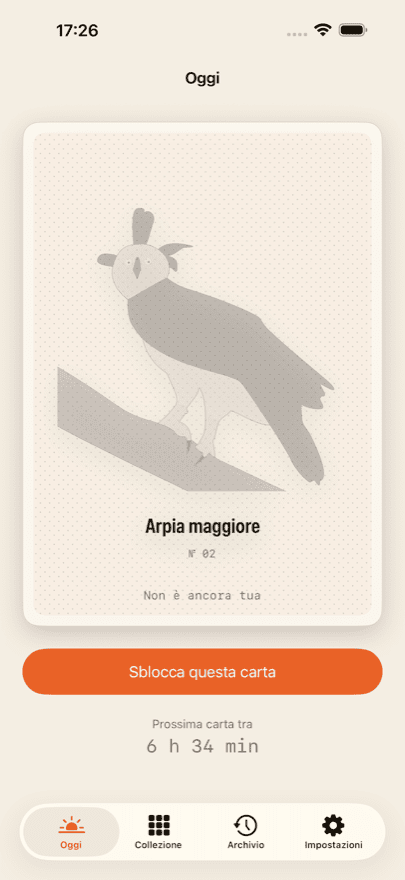
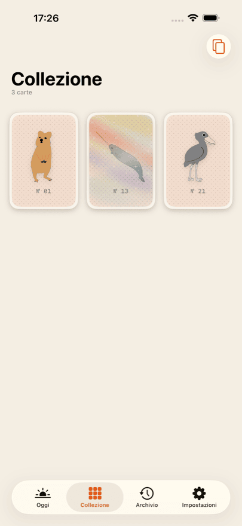
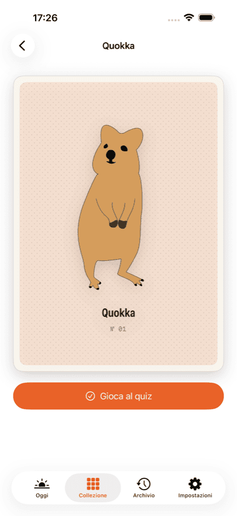
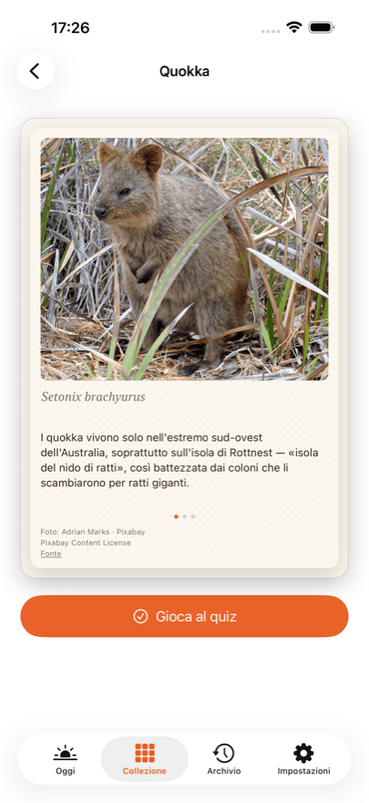
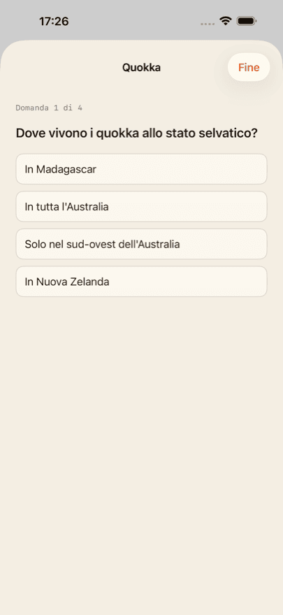

App per iPhone
Daily Bestiary
Collezionare carte di animali
Ogni giorno ti aspetta una nuova carta animale disegnata a mano. Sbloccala ed è tua: sul retro trovi una fotografia, tre curiosità, il nome scientifico e un quiz di quattro domande.
Le tue prime tre carte sono in regalo. Una di queste è una carta olografica: inclina il telefono e il riflesso la attraversa.
Daily Bestiary arriverà a breve su App Store. Appena sarà pubblicata, questo pulsante porterà direttamente alla scheda.
Cosa ottieni
-
Una carta al giorno
Una, mai di più. La carta del giorno si calcola dalla tua data d’inizio, non da una data del calendario: cominci quando vuoi.
-
Una foto e tre curiosità
Ogni retro porta una fotografia reale dell’animale, tre curiosità e il nome scientifico.
-
Un quiz per ogni animale
Quattro domande per ogni animale, riviste da un insegnante di biologia. Si possono sempre rigiocare.
-
Una collezione che cresce
L’album mostra soltanto le tue carte. Nessuna casella vuota, nessun «x su y», nessuna corsa.
-
Carte olografiche
Alcune carte brillano: inclina il telefono e la luce scorre sulla superficie.
Ecco com’è





Collector
Collector apre l’archivio: un giorno saltato si può ancora recuperare. La carta del giorno è inclusa ogni giorno e ottieni le statistiche del quiz su tutta la collezione.
Collector è un abbonamento e si rinnova finché non lo annulli. Puoi annullarlo in qualsiasi momento nelle impostazioni del tuo account Apple. Prezzi e durate correnti sono indicati su App Store, perché variano da paese a paese.
Niente account, niente feed, niente pubblicità
Non c’è registrazione né accesso. La tua collezione resta sul dispositivo e — se hai eseguito l’accesso a iCloud — si sincronizza in privato tra i tuoi dispositivi. Lo sviluppatore non vi ha alcun accesso.
Non c’è niente da scorrere e niente da grindare. Nessuna pubblicità, nessun circuito pubblicitario, nessun tracciamento tra app. Gli acquisti passano da un fornitore di servizi; l’informativa sulla privacy dice esattamente che cosa gli arriva.
Crediti fotografici
I disegni sul fronte delle carte sono realizzati a mano. Le fotografie sul retro provengono da fonti libere: Pixabay, Unsplash e Wikimedia Commons.
Ogni fotografia è accreditata sul retro della propria carta, con autore, licenza e link alla fonte. Non nelle note in fondo, ma dove sta l’immagine.
Domande frequenti
Quanto costa Daily Bestiary?
Il download è gratuito e le prime tre carte sono in regalo, con retro, curiosità e quiz. Poi sblocchi la carta del giorno singolarmente, acquisti un pacchetto da dieci oppure ti abboni a Collector. I prezzi correnti sono indicati su App Store; variano da paese a paese.
Serve un account?
No. Nessuna registrazione, nessun accesso, nessun profilo. L’app non chiede né nome né indirizzo e-mail.
Quante carte ci sono in tutto?
Non è scritto da nessuna parte, né nell’app né qui. Un totale trasforma il collezionare in una barra di avanzamento, ed è esattamente ciò che non vogliamo. Quando avrai tutte le carte esistenti, l’app te lo dirà.
Cosa succede se salto un giorno?
Quella carta non è persa. Collector apre l’archivio, dove i giorni saltati si possono recuperare. Senza Collector, il giorno dopo arriva semplicemente la carta successiva.
La collezione si sincronizza tra iPhone e iPad?
Sì, purché entrambi i dispositivi abbiano eseguito l’accesso a iCloud con lo stesso account Apple. La sincronizzazione passa dal tuo database iCloud privato, che lo sviluppatore non può consultare.
Ho reinstallato l’app: ho perso gli acquisti?
No. Nelle impostazioni dell’app e su ogni schermata d’acquisto c’è «Ripristina acquisti». Così l’abbonamento e il credito residuo tornano associati al tuo account Apple. La collezione torna tramite iCloud.
Come annullo Collector?
Tramite Apple, non tramite l’app: Impostazioni → il tuo nome → Abbonamenti. Lì si annulla in qualsiasi momento, con effetto alla fine del periodo in corso. L’app propone lo stesso percorso dal Customer Center nelle sue impostazioni.
L’app funziona senza connessione a internet?
Sì. Tutte le carte, le fotografie e le domande del quiz sono contenute nell’app e non vengono scaricate. La connessione serve solo per gli acquisti e per la sincronizzazione iCloud.